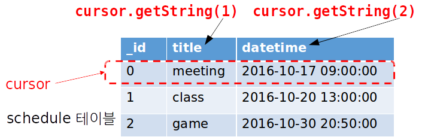

layout: true .top-line[] --- class: center, middle # SQLite (데이터베이스) --- ## Contents * SQLite 개요 * INSERT * DELETE * UPDATE * SELECT * Cursor * SimpleCursorAdapter --- ## SQLite 개요 * SQLite 라이브러리 - SQL (Structured Query Language) 문을 이용해 데이터를 조회하는 관계형 데이터베이스 - 안정적 이며, 소규모 데이터베이스에 적합 - 단순한 파일로 데이터를 저장 (별도의 서버 연결 및 권한 설정 불필요) - 복수 사용자는 지원되지 않음 - 안드로이드의 일부로 포함됨 --- ## SQL 구문 * 데이터 정의 언어 (Data Definition Language) - <a href="https://ko.wikipedia.org/wiki/CREATE_(SQL)">CREATE</a> 테이블 생성 - <a href="https://ko.wikipedia.org/wiki/CREATE_(SQL)">DROP</a> 테이블 삭제 - <a href="https://ko.wikipedia.org/wiki/ALTER_(SQL)">ALTER</a> 테이블 속성 수정 * 데이터 조작 언어 (Data Manipulation Language) - <a href="https://ko.wikipedia.org/wiki/Insert_(SQL)">INSERT INTO</a> 레코드(행) 추가 - <a href="https://ko.wikipedia.org/wiki/Update_(SQL)">UPDATE ~ SET</a> 레코드(행) 변경 - <a href="https://ko.wikipedia.org/wiki/Delete_(SQL)">DELETE FROM</a> 레코드(행) 삭제 - <a href="https://ko.wikipedia.org/wiki/Select_(SQL)">SELECT ~ FROM ~ WHERE</a> 레코드(행) 검색 --- ## SQLiteOpenHelper 클래스 * DB 생성 및 열기 담당 * SQLiteOpenHelper는 추상 클래스 이므로, 서브클래스에서 생성자와 아래의 메소드를 재정의함 - 생성자 ```java SQLiteOpenHelper( Context context, // DB 생성 컨텍스트, 보통 메인 액티비티 String name, // DB 파일 이름 SQLiteDatabase.CursorFactory factory, // 표준커서 사용시 null int version) // DB 버전 ``` 메서드 | 설명 ----------|-------------------------------- onCreate | DB가 처음 만들어질 때 호출됨. 테이블을 생성하고 초기 레코드를 삽입한다. onUpgrade | DB 업그레이드 시 호출됨. 기존 테이블 삭제 및 생성하거나 ALTER TABLE로 스키마 수정 --- ## 예제 코드 ```java public class MyDBHelper extends SQLiteOpenHelper { * private static final String DB_NAME="schedule.db"; private static final int DATABASE_VERSION = 1; public MyDBHelper(Context context) { super(context, DB_NAME, null, DATABASE_VERSION); } public void onCreate(SQLiteDatabase db) { * db.execSQL("CREATE TABLE schedule (" + * "_id INTEGER NOT NULL PRIMARY KEY," + * "title TEXT NULL," + * "datetime DATETIME NULL" + * ");"); } public void onUpgrade(SQLiteDatabase db, int oldVersion, int newVersion) { * db.execSQL("DROP TABLE IF EXISTS schedule"); onCreate(db); } ``` .footnote[https://github.com/kwanu70/AndroidExamples/blob/master/chap7/SQLiteDBTest/app/src/main/java/com/example/kwanwoo/sqlitedbtest/MyDBHelper.java] --- ## SQLiteOpenHelper 클래스 * DB 접근 시 아래의 메서드를 호출하여 DB객체를 얻는다. 메서드 | 설명 --------------------|-------------------------------------------------------------------- getReadableDatabase | 읽기 위해 DB open. DB가 없거나 버전 변경 시 onCreate, onUpgrade가 호출됨. getWritableDatabase | 읽고 쓰기 위해 DB open. 권한이 없거나 디스크 용량 부족 시 실패한다. close | DB를 닫는다. * 쿼리 실행 - **void execSQL (String sql)** + SELECT 명령을 제외한 대부분의 명령을 직접 실행 - **Cursor rawQuery(String sql, String[] selectionArgs)** + SELECT sql 문을 실행 --- ## 예제 코드 (INSERT) ```java button.setOnClickListener(new View.OnClickListener() { @Override public void onClick(View view) { EditText title = (EditText)findViewById(R.id.title1); try { * String sql = String.format ( * "INSERT INTO schedule (_id, title, datetime)\n"+ * "VALUES (NULL, '%s', '%s')", * title.getText(), getDateTime()); * helper.getWritableDatabase().execSQL(sql); } catch (SQLException e) { Log.e(TAG,"Error inserting into DB"); } } }); ``` **getDateTime():** "yyyy-MM-dd HH:mm:ss" 형식의 문자열 반환 .footnote[https://github.com/kwanu70/AndroidExamples/blob/master/chap7/SQLiteDBTest/app/src/main/java/com/example/kwanwoo/sqlitedbtest/MainActivity.java] --- ## 예제 코드 (DELETE) ```java button1.setOnClickListener(new View.OnClickListener() { @Override public void onClick(View view) { EditText title2 = (EditText)findViewById(R.id.title2); try { * String sql = String.format ( * "DELETE FROM schedule\n"+ * "WHERE title = '%s'", * title2.getText()); * helper.getWritableDatabase().execSQL(sql); } catch (SQLException e) { Log.e(TAG,"Error deleting recodes"); } } }); ``` .footnote[https://github.com/kwanu70/AndroidExamples/blob/master/chap7/SQLiteDBTest/app/src/main/java/com/example/kwanwoo/sqlitedbtest/MainActivity.java] --- ## 예제 코드 (UPDATE) ```java button2.setOnClickListener(new View.OnClickListener() { @Override public void onClick(View view) { EditText title3 = (EditText)findViewById(R.id.title3); EditText title4 = (EditText)findViewById(R.id.title4); try { * String sql = String.format ( * "UPDATE schedule\n"+ * "SET title = '%s'\n"+ * "WHERE title='%s'", * title4.getText(), title3.getText()) ; helper.getWritableDatabase().execSQL(sql); } catch (SQLException e) { Log.e(TAG,"Error deleting recodes"); } } }); ``` .footnote[https://github.com/kwanu70/AndroidExamples/blob/master/chap7/SQLiteDBTest/app/src/main/java/com/example/kwanwoo/sqlitedbtest/MainActivity.java] --- ## 예제 코드 (SELECT) ```java button3.setOnClickListener(new View.OnClickListener() { @Override public void onClick(View view) { TextView result = (TextView)findViewById(R.id.result); * String sql = "Select * FROM schedule"; * Cursor cursor = helper.getReadableDatabase().rawQuery(sql,null); StringBuffer buffer = new StringBuffer(); * while (cursor.moveToNext()) { * buffer.append(cursor.getString(1)+"\t"); * buffer.append(cursor.getString(2)+"\n"); } result.setText(buffer); } }); ```  .footnote[https://github.com/kwanu70/AndroidExamples/blob/master/chap7/SQLiteDBTest/app/src/main/java/com/example/kwanwoo/sqlitedbtest/MainActivity.java] ??? Cursor의 getString(int columnIndext) 메소드는 문자열 형태로 columnIndex에 해당하는 테이블의 속성 값을 리턴한다. 즉, cursor.getString(1)은 schedule 테이블의 title 속성을 리턴하고, cursor.getString(2)는 schedule 테이블의 datetime 속성을 리턴한다. --- ## SQLite Cursor * 쿼리 결과는 결과셋 자체가 리턴되지 않으며 위치를 가리키는 커서(Cursor)로 리턴된다 - 커서의 메소드 목록 메서드 | 설명 ---------------|----------------------------------------------------------- close | 결과셋을 닫는다. getColumnCount | 컬럼의 개수를 구한다 getColumnIndex | 이름으로부터 컬럼 번호를 구한다. getColumnName | 번호로부터 컬럼 이름을 구한다. getCount | 결과셋의 레코드 개수를 구한다. getInt | 컬럼값을 정수로 구하며 인수로 컬럼 번호를 전달한다. getDouble | 컬럼값을 실수로 구한다. getString | 컬럼값을 문자열로 구한다. moveToFirst | 첫 레코드 위치로 이동하며, 결과셋이 비어있을 시 false를 리턴한다. moveToLast | 마지막 레코드 위치로 이동하며, 결과셋이 비어있을 시 false를 리턴한다. moveToNext | 다음 레코드 위치로 이동하며, 마지막 레코드이면 false를 리턴한다. moveToPrevious | 이전 레코드로 이동하며, 첫 레코드이면 false를 리턴한다. moveToPosition | 임의의 위치로 이동한다. --- ## SimpleCursorAdapter (1/3) * SimpleCursorAdapter를 이용하여 간편하게 리스트 뷰(어댑터 뷰)에 SELECT 결과를 출력 * SimpleCursorAdapter (Context context, - int layout, // 어댑터 뷰 항목 표현을 위한 레이아웃 - Cursor c, // 검색 결과를 가리키는 커서 - String[] from, // 표시할 테이블 속성 - int[] to, // 테이블 속성을 출력할 뷰 ID - int flags) // 보통은 0 --- ## SimpleCursorAdapter (2/3) ```java button3.setOnClickListener(new View.OnClickListener() { @Override public void onClick(View view) { String sql = "Select * FROM schedule"; Cursor cursor = helper.getReadableDatabase().rawQuery(sql,null); SimpleCursorAdapter adapter = new SimpleCursorAdapter(getApplicationContext(), R.layout.item, cursor, new String[]{"title", "datetime"}, new int[]{R.id.tvTitle, R.id.tvDate}, 0); ListView lv = (ListView)findViewById(R.id.listview); lv.setAdapter(adapter); } }); ``` .footnote[https://github.com/jyheo/AndroidExamples/blob/master/chap7/SQLiteDBTest/app/src/main/java/com/example/kwanwoo/sqlitedbtest/MainActivity.java#L89] --- ## SimpleCursorAdapter (3/3) * item.xml for SimpleCursorAdapter ```xml <?xml version="1.0" encoding="utf-8"?> <LinearLayout xmlns:android="http://schemas.android.com/apk/res/android" android:orientation="horizontal" android:layout_width="match_parent" android:layout_height="match_parent" android:padding="5dp"> <TextView android:id="@+id/tvTitle" android:layout_width="match_parent" android:layout_height="wrap_content" android:padding="5dp" android:textColor="@color/colorPrimary" android:layout_weight="1"/> <TextView android:id="@+id/tvDate" android:layout_width="match_parent" android:layout_height="wrap_content" android:padding="5dp" android:textColor="@color/colorPrimaryDark" android:layout_weight="1"/> </LinearLayout> ``` .footnote[https://github.com/jyheo/AndroidExamples/blob/master/chap7/SQLiteDBTest/app/src/main/res/layout/item.xml]